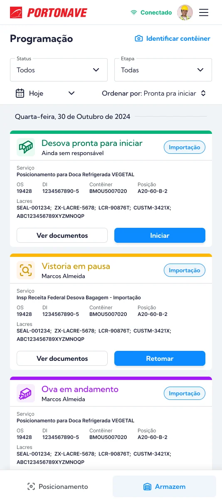
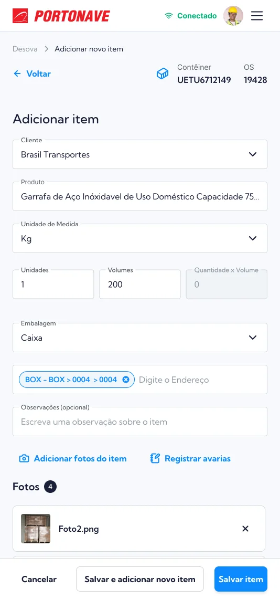
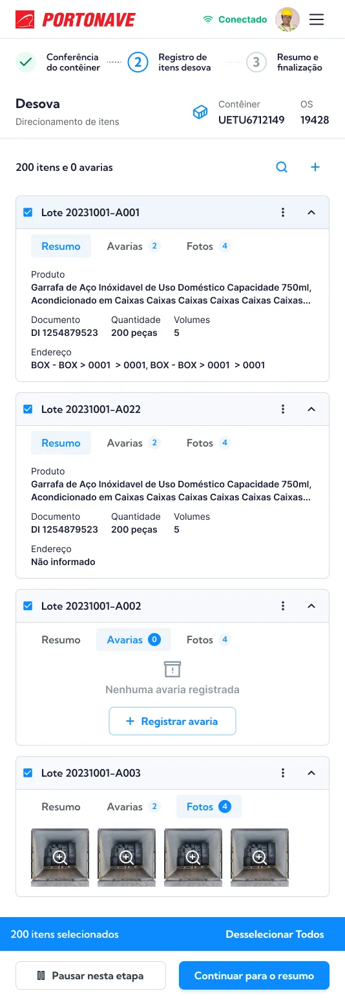
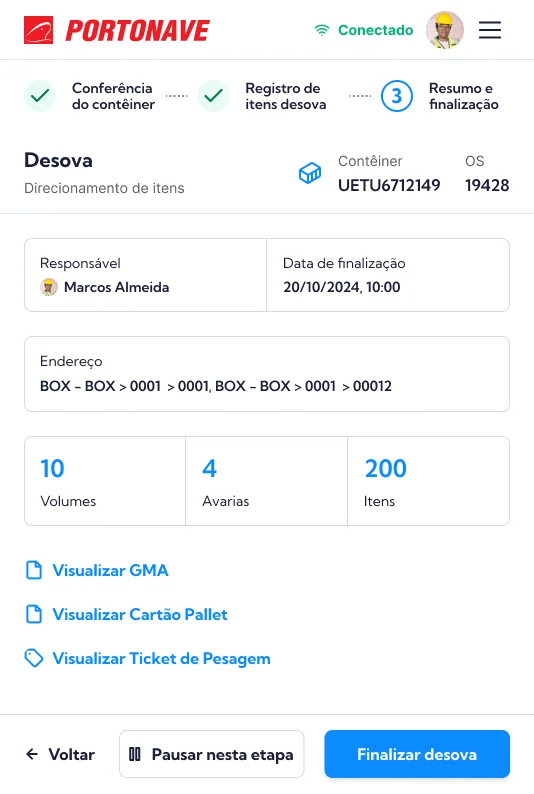
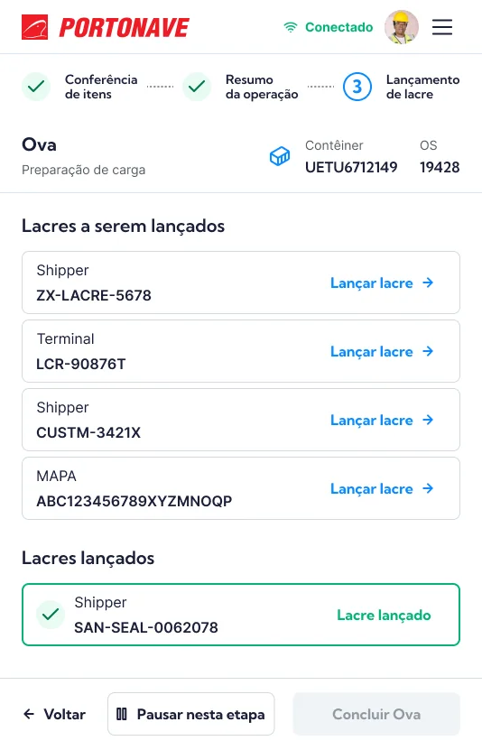
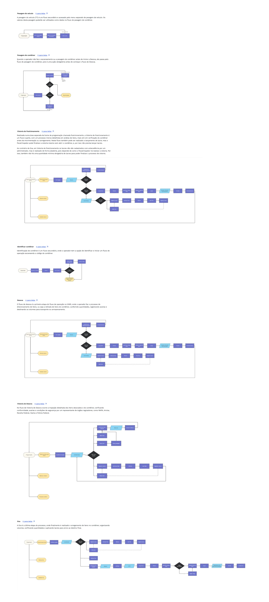

Designing operational tablet workflows for port workers, with an emphasis on clarity under tight constraints and complex tasks.

Operational and business gains described in the original case are goals and expected benefits; no quantified before/after results were provided.
Product Brief
🛑 Problem
The current WMS system had poor usability and functional limitations, negatively affecting the productivity and operational efficiency of port operators.
💡 Why we took on this project
- Improve user experience
- Unlock operational gains and increase productivity
- Improve the quality of work for port operators
📈 Expected Business Gains (Goals)
- Operational gains and productivity increase:
- Reduced container handling time
- Fewer operational errors
- Better resource planning
- Higher container processing capacity per day
- Improved operator work experience:
- Shorter learning curve and fewer errors
- Reduced cognitive load and operational stress
- More efficient training
About the Interface
📌 Context
This project presented several challenges:
- Tight deadlines
- Frequently changing content
- Complex operational flows
- Tablet screen size limitations
Even with these constraints, I successfully delivered all 7 main product flows.
I designed the screens based on an existing Design System but had the freedom to create new components and define the product’s overall composition and architecture.
Other designers contributed support throughout the process, but I acted as the lead Product Designer, responsible for the vast majority of screen designs.
🖥️ Some Screens
The full project included hundreds of screens across all 7 flows, so instead of sharing everything here, I’ve selected a few examples that demonstrate my design and problem-solving skills.
Click on images to enlarge.

Home


Item registration


Items list


Review


Seal application and registration
Documentation of Flows & Usage Scenarios
As the main designer on the project, I handled product documentation directly in Figma, with a duplicate hosted in Google Docs to improve accessibility.
The document included:
- All product flows
- Usage scenarios
- Explanations for decision-making
- Generalized diagrams to help onboard stakeholders or developers not previously involved in the project
This ensured clarity and continuity for both internal and external teams.


📌 Conclusion
Despite the complexity and operational challenges, we successfully delivered the seven main flows of the WMS product, improving usability and operational efficiency for port operators.
The new interface reduced errors, optimized task time, and eased the operators’ workload. Additionally, the documentation ensured scalability and clarity for future developments.
This project proved how user-centered design can drive real business results, even in highly technical, operational environments.